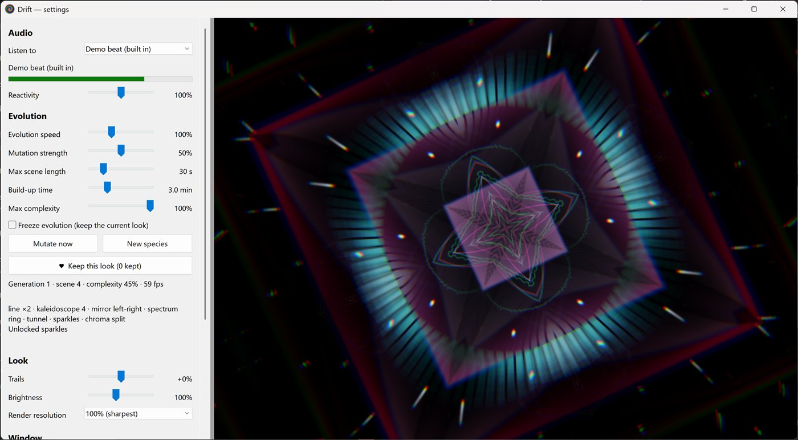
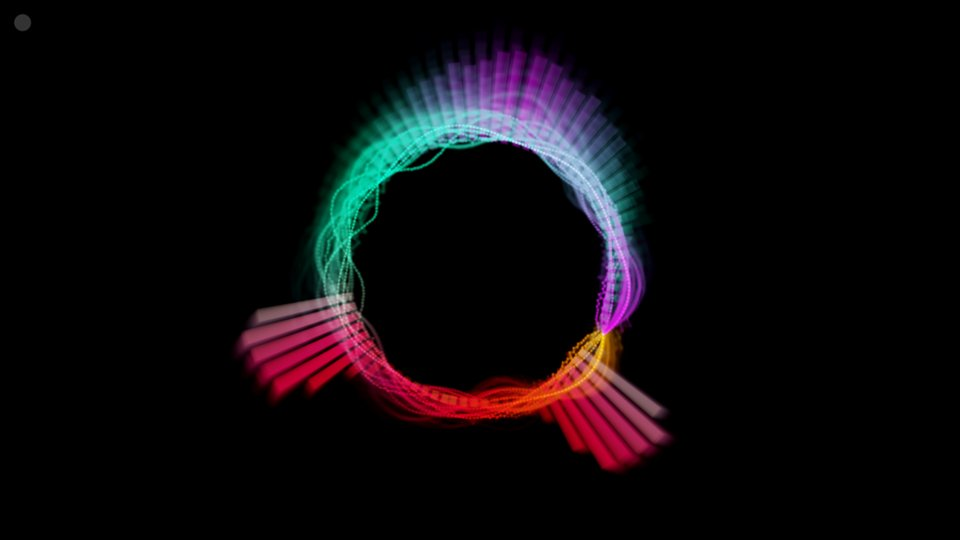
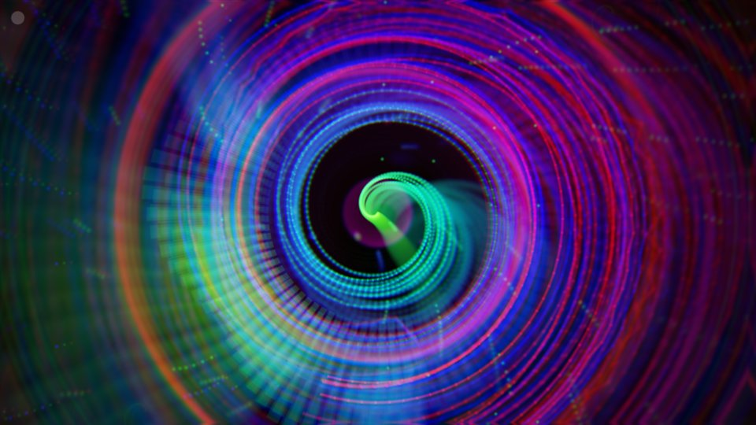
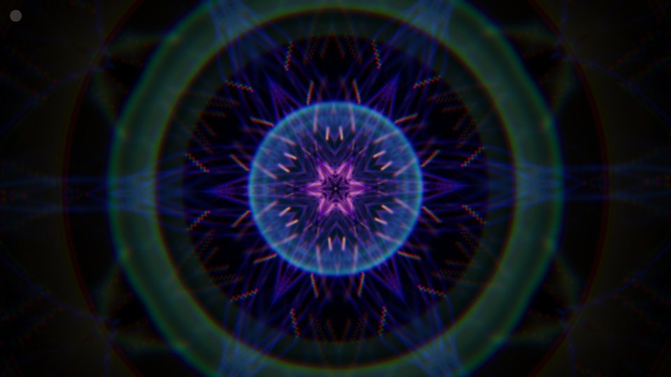
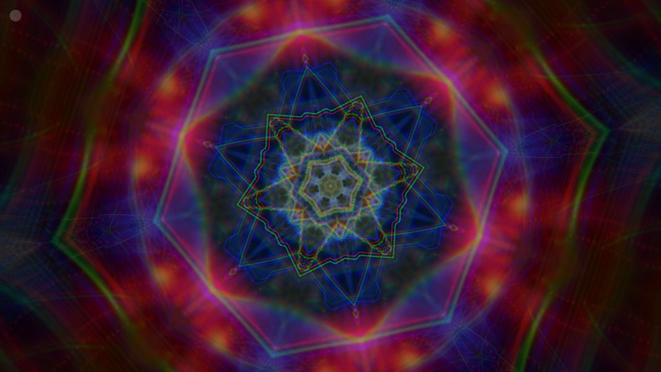
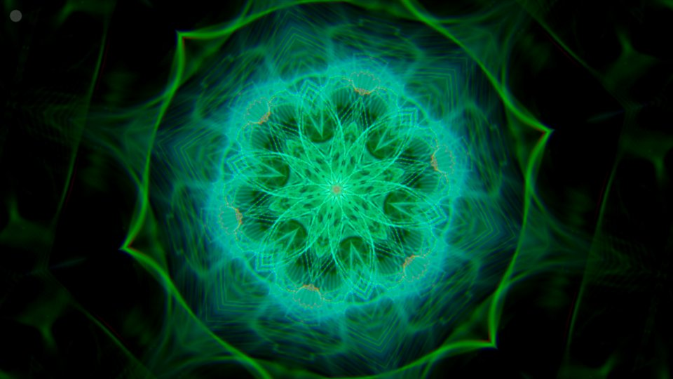
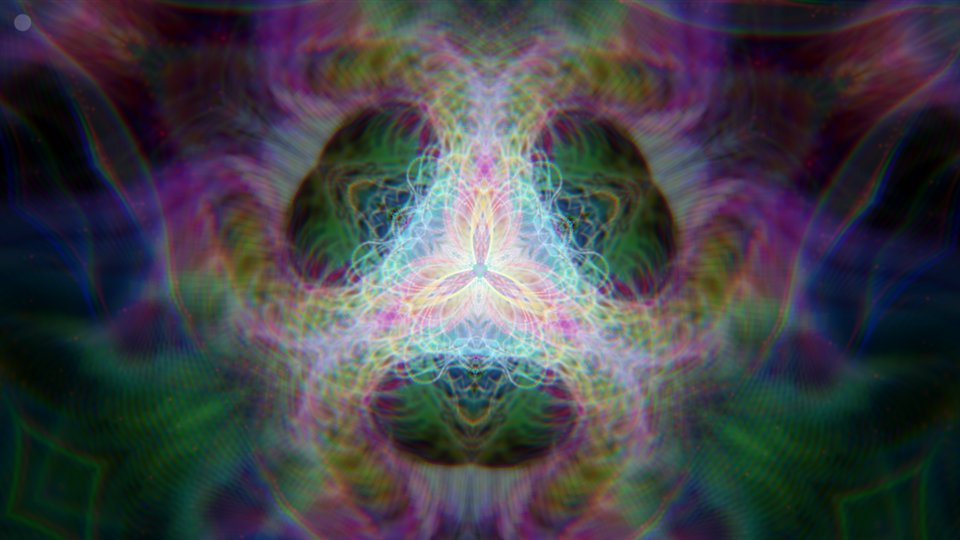

Drift
A trippy music visualizer for Windows that never looks the same twice. Every song starts simple and slowly grows into something else.
⚠️ AI vibe-coded (built with Claude) by a dumbass who has no idea what he's doing. Use at your own risk; no warranty, no promises.
One file, no installer. Windows 10 or 11 (64-bit) with a DirectX 11 GPU. It's unsigned, so SmartScreen may warn you. Click More info → Run anyway.

It evolves
It listens to whatever Windows is playing. While the music keeps going, new layers unlock one by one: spectrum ring, swirl, tunnel rings, sparkles, orbs, kaleidoscopes, echoes. Every setting keeps drifting slowly. When the music changes character, the scene mutates. When a new song starts, a new "species" is born. Press L on a look you love, and later species are sometimes bred from your favourites.






Dock it, or let it float
- Docked, the picture sits beside the settings. Drag the divider to resize either side.
- Undocked, it's a borderless window with only a faint dot in its top-left corner. Drag the dot to move it, drag the edges to resize, and double-click the dot to fill the screen.
- Type an exact size in the settings, keep it on top of other windows, or right-click it for a menu.
Keys
| F F11 | Fill screen (Esc to leave) |
| D | Dock / undock |
| M | Mutate now |
| N | New species |
| L | Keep this look |
| Space | Freeze evolution |